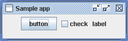
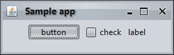
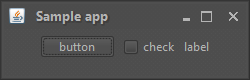

This document describes the steps to create a sample Swing application and run it under Substance look and feel.
Since Substance requires JDK 6.0 or higher, if you don't have such an installation on your machine, you need to download it from this site and install it. The command-prompt examples below assume that java executable is in the path. This executable is part of JRE (under bin folder) as well as part of JDK (under bin folder). Consult your OS manual on how to add the relevant folder to the path. Alternatively, you can put the entire path to the java executable in the scripts below.
After you have JDK 6.0+ installed on your machine, create
the following Walkthrough.java class:
public class Walkthrough extends JFrame {
public Walkthrough() {
super("Sample app");
this.setLayout(new FlowLayout());
this.add(new JButton("button"));
this.add(new JCheckBox("check"));
this.add(new JLabel("label"));
this.setSize(new Dimension(250, 80));
this.setLocationRelativeTo(null);
this.setDefaultCloseOperation(JFrame.EXIT_ON_CLOSE);
}
public static void main(String[] args) {
JFrame.setDefaultLookAndFeelDecorated(true);
SwingUtilities.invokeLater(new Runnable() {
public void run() {
Walkthrough w = new Walkthrough();
w.setVisible(true);
}
});
}
}
This is a simple frame (that does nothing) with a button, a checkbox and a label. You can create this class in your favourite IDE or in any text editor. Once this class is created, compile it. If you're using an IDE, consult the IDE help on the compilation process. If you're using a simple text editor, you can compile this class by using:
javac Walktrough.java
If you have problems, consult the online help for javac compiler. The compiled
Walkthrough.class will be created in the same folder as your
Walkthrough.java.
In order to run it, use:
java -cp . Walkthrough
You will see the following frame under the default Ocean look and feel:
In order to run the same frame under Substance look and feel, you first need to
choose the Substance skin that you would like to use (see the links at the end
of this document). Suppose that you choose the
Business
skin. Now you have the following options:
-Dswing.defaultlaf=org.pushingpixels.substance.api.skin.SubstanceBusinessLookAndFeelUIManager.setLookAndFeel(new SubstanceBusinessLookAndFeel())UIManager.setLookAndFeel("org.pushingpixels.substance.api.skin.SubstanceBusinessLookAndFeel");The first option doesn't require any code changes in the application above. Run the following script:
java -Dswing.defaultlaf=org.pushingpixels.substance.api.skin.SubstanceBusinessLookAndFeel -cp . Walkthrough
You will see the following exception:
Exception in thread "AWT-EventQueue-0" java.lang.Error:
Cannot load org.pushingpixels.substance.api.skin.SubstanceBusinessLookAndFeel
at javax.swing.UIManager.initializeDefaultLAF(UIManager.java:1345)
at javax.swing.UIManager.initialize(UIManager.java:1432)
at javax.swing.UIManager.maybeInitialize(UIManager.java:1420)
at javax.swing.UIManager.getUI(UIManager.java:1007)
at javax.swing.JPanel.updateUI(JPanel.java:109)
at javax.swing.JPanel.(JPanel.java:69)
at javax.swing.JPanel.(JPanel.java:92)
at javax.swing.JPanel.(JPanel.java:100)
at javax.swing.JRootPane.createGlassPane(JRootPane.java:527)
at javax.swing.JRootPane.(JRootPane.java:347)
at javax.swing.JFrame.createRootPane(JFrame.java:260)
at javax.swing.JFrame.frameInit(JFrame.java:241)
at javax.swing.JFrame.(JFrame.java:208)
at Walkthrough.(Walkthrough.java:10)
at Walkthrough$1.run(Walkthrough.java:25)
at java.awt.event.InvocationEvent.dispatch(InvocationEvent.java:209)
at java.awt.EventQueue.dispatchEvent(EventQueue.java:597)
at java.awt.EventDispatchThread.pumpOneEventForFilters(EventDispatchThread.java:284)
at java.awt.EventDispatchThread.pumpEventsForFilter(EventDispatchThread.java:184)
at java.awt.EventDispatchThread.pumpEventsForHierarchy(EventDispatchThread.java:174)
at java.awt.EventDispatchThread.pumpEvents(EventDispatchThread.java:169)
at java.awt.EventDispatchThread.pumpEvents(EventDispatchThread.java:161)
at java.awt.EventDispatchThread.run(EventDispatchThread.java:122)
This means that the org.pushingpixels.substance.api.skin.SubstanceBusinessLookAndFeel class in not found in the classpath. This class is located in the substance.jar. Here are the steps to locate and download the latest stable version of this file:
Assuming that you have saved the substance.jar and trident.jar to the C:/temp folder, use the following script in order to run the frame under Substance:
java -Dswing.defaultlaf=org.pushingpixels.substance.api.skin.SubstanceBusinessLookAndFeel -cp .;C:/temp/substance.jar;C:/temp/trident.jar Walkthrough
The result is the same frame under Substance look and feel:
The other two options for setting Substance require changing the
code. Go back to your Java editor and replace the
main() method by:
public static void main(String[] args) {
JFrame.setDefaultLookAndFeelDecorated(true);
SwingUtilities.invokeLater(new Runnable() {
public void run() {
try {
UIManager.setLookAndFeel(new SubstanceGraphiteLookAndFeel());
} catch (Exception e) {
System.out.println("Substance Graphite failed to initialize");
}
Walkthrough w = new Walkthrough();
w.setVisible(true);
}
});
}
Note that here we are using another Substance skin,
Graphite.
In order to compile the new
Walkthrough.java, you need to add
the substance.jar and trident.jar to the build path. Consult
your IDE help if you're using IDE. For command-prompt compilation,
use the additional -cp flag:
javac -cp c:/temp/substance.jar;c:/temp/trident.jar Walktrough.java
Now you can run your application without the -Dswing.defaultlaf JVM flag, but you still need to specify the location of the substance.jar and trident.jar as before:
java -cp .;C:/temp/substance.jar;C:/temp/trident.jar Walkthrough
If you don't want to create an explicit dependency on the Substance
classes in your code, change your main() method to:
public static void main(String[] args) {
JFrame.setDefaultLookAndFeelDecorated(true);
SwingUtilities.invokeLater(new Runnable() {
public void run() {
try {
UIManager.setLookAndFeel("org.pushingpixels.substance.api.skin.SubstanceGraphiteLookAndFeel");
} catch (Exception e) {
System.out.println("Substance Graphite failed to initialize");
}
Walkthrough w = new Walkthrough();
w.setVisible(true);
}
});
}
You can run the application the same way as before. Here is how it looks like:
Where to go from here?
test/Check.java